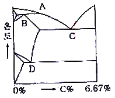

압연기능장 (2010-07-11 기출문제)
1과목: 임의 구분
1. 다음 중 어큐뮬레이터(Accumulator)취급시 주의사항으로 틀린 것은?
- 어큐뮬레이터는 기름의 유출부를 아래로, 또한 수직으로 설치한다.
- 회로를 분해 점검할 경우 여큐뮬레이터의 모든 기름을 방출한 후에 작업할 수 있도록 구성한다,
- 펌프와 어큐뮬레이터 사이에는 역류방지 밸브를 설치하여 압유가 펌프쪽으로 역류하지 않도록 한다.
- 충격 흡수용 어큐뮬레이터는 충경 발생원의 먼 곳에 취부하고, 펌프의 맥동 방지용은 펌프 입출측에 취부한다,
(정답률: 85%)

2. 다음 중 CAD시스템의 특징에 대한 설명으로 틀린 것은?
- 전체적으로 설계의 단가를 감소시킬 수 있다.
- 컴퓨터에 의해서 효율적인 결정을 내릴 수 있어 양질의 설계를 할 수 있다.
- 설계시간, 제품 개발기간의 감소로 인하여 좀 더 빠른 설계를 할 수 있다.
- 설계해석 및 실험을 통해야 하므로 즉각적으로 설계는 변경할 수 없다.
(정답률: 87%)
3. Fe-C계 평형 상태도에서 레데뷰라이트(Ledeburite) 조직이 생기는 곳은?

- A
- B
- C
- D
(정답률: 84%)
4. 오스테나이트계 스테인리스강에 대한 설명으로 틀린 것은?
- 대표적인 조성은 18%Cr - 8%Ni이다.
- 자성체이며, bcc의 결정구조를 갖는다.
- 오스테나이트조직은 페라이트조직보다 원자밀도가 높아 내식성이 좋다.
- 1100℃ 부근에서 급냉하는 고용화처리를 하여 균일한 오스테나이트조직으로 사용한다.
(정답률: 65%)
5. 냉연제품이 열연 박판에 비하여 우수한 점을 설명한 것 중 틀린 것은?
- 판 두께 정도가 매우 높다.
- 형상이 평탄하지 못하다.
- 스케일 부착과 표면 겨함이 적고 미려하다.
- 냉간압연 후 풀림 및 조질 압연 등의 공정처리를 함으로서 우수한 기계적 성질을 갖는다.
(정답률: 77%)
6. 작업장의 분진에 대한 설명으로 옳은 것은?
- 금속의 중기 등 기체가 공기 중에 부유하고 있는 것
- 액체의 미세한 입자가 공기 중에 부유하고 있는 것
- 연마, 절삭 등에 의한 고체유해물의 고체미립자가 공기 중에 부유하고 있는 것
- 액체 또는 고체물질이 증기압에 따라 휘발 또는 승화하여 기체로 되는 것
(정답률: 84%)
7. 주의에 대산 특징 중 동시에 2개 방향에 집중하지 못하는 것은?
- 변동성
- 방향성
- 선택성
- 피로성
(정답률: 54%)
8. 청동의 주조시 일어나는 편석에 대한 설명으로 틀린 것은?
- 냉각속도가 클수록 편석이 많이 일어난다.
- 개재물이 적을수록 편석이 많이 일어난다.
- 응고구간이 확장될수록 편석이 많이 일어난다.
- 확산속도가 작을수록 편석이 많이 일어난다.
(정답률: 72%)
9. 선재 압연기 중 block mill 의 특징을 설명한 것으로 틀린 것은? (문제 오류로 정답이 정확하지 않습니다. 정답지를 찾지못하여 임의 정답 2번으로 설정하였습니다. 정답을 아시는 분께서는 오류 신고를 통하여 정답 입력 부탁 드립니다.)
- 구동부의 일체화로 고속회전이 가능하다.
- 하나의 프레임에 대해 조대한 구조로 배치되기 때문에 설치면적이 크다.
- 스탠드간 간격이 좁기 때문에 선후단의 불량 부분이 적어 실수율이 높다.
- 부하용량이 큰 유막베어링을 채용하므로 치수 정도가 높은 정밀압연이 가능하다.
(정답률: 67%)
10. 압연시 가열온도가 낮거나 충분한 균일되지 않을 경우에 발생하는 결점으로 틀린 것은?
- 압연 중 온도가 낮아 압연 하중이 증가한다.
- 변형저항은 감소하나 압연에 영향은 적다.
- 압연기에 과부하가 걸리게 된다.
- 완성제품에 형상 불량 및 fish tail이 발생한다.
(정답률: 77%)
11. 압연속도와 마찰계수의 관계로 옳은 것은?
- 항상 일정하다.
- 압연속도와 마찰계수는 관계없다.
- 압연속도가 크면 마찰계수는 증가한다.
- 압연속도가 크면 마찰계수는 감소한다.
(정답률: 80%)
12. 냉연 제품의 결함 중 요철성 결함이 아닌 것은?
- Dent
- Scratch
- Roll Mark
- Oil Stain
(정답률: 77%)
13. 압연 중 제품의 두께 측정기로 사용되는 것은?
- X- ray
- 압력계
- 스트레인 게이지
- 초음파 탐상 시험기
(정답률: 83%)
14. 열간공정에서 가열된 Slab를 수평압연기로 사상압연에 적합한 두께까지 압연하는 것과 Edger에 의해 주문폭에 따라 폭 조정을 하는 공정은?
- 연주정정 공정
- 조압연 공정
- 조질압연 공정
- 교정압연 공정
(정답률: 70%)
15. 가열로에 로상 보호재를 깔아주는 이유로 옳은 것은?
- 편열을 일으키기 위하여 깔아준다.
- 강괴 장입 추출시 충격을 주기 위하여 깔아준다.
- 로내에 떨어진 스케일과의 화학적 반응을 일으키기 위함이다.
- 밑부분이 평단도가 좋지 못한 강괴를 로에 장입하여 직립배열이 용이하도록 한다.
(정답률: 72%)
16. 압연작용에서 접촉각과 압하량의 관계식 으로 옳은 것은? (단, 압하량은 h(mm), 롤의 지름(d)은 2r(mm), 접촉각은 a이다.)
- cosa = (r-h/2)÷r (= cosa (h/2))
- tsna = (r-h/2)÷r
- sina = r/(r-(h/2))
- cosa = (r-(2/h)÷r
(정답률: 65%)
17. Tight Coil의 풀림 조건에 따른 특징을 설명한 것 중 틀린 것은?
- 균열시간이 길수록 연신율이 증가한다.
- 균열시간이 길수록 가공성이 향상된다.
- 냉각은 강중 고용탄소를 석출하지 못하도록 급냉하는 것이좋다.
- 풀림온도가 균열온도 이상으로 높으면 결정립이 조대화 되고 가공표면에 오렌지 필현상이 나타난다.
(정답률: 87%)
18. 가단주철의 성질에 대한 설명으로 틀린 것은?
- 주조성이 우수하여 복잡한 주물을 만들수 있다.
- 강도, 내력이 높은 편이며 경도는 Si량이 많을수록 낮다.
- 내식성, 내충격성, 내열석이 우수하고 절삭성이 좋다.
- 흑심가단주철의 인장강도는 30~40kgf/mm2
(정답률: 65%)
19. 작업면상의 필요한 장소에만 높은 조도를 취하는 방법으로 밝고 어둠의 차이가 많아 눈부심을 많이 일으키는 조명 방식은?
- 전반조명
- 직접조명
- 간접조명
- 국소조명
(정답률: 70%)
20. 상.하 압연과 동시에 측면 압연도 할 수 있는 압연기는 I형강, H형강 등의 압연에 사용되는 압연기는?
- 라우드식 압연기
- 스테켈식 압연기
- 센지미어 압연기
- 유니버셜 압연기
(정답률: 86%)
2과목: 임의 구분
21. 냉간 압연된 제품의 표면을 청정하게 하기 위한 방법 중 물리적 세정방법에 해당되는 것은?
- 전해 세정
- 용제 세정
- 알칼리 세정
- 계면활성제 세정
(정답률: 75%)
22. HSS롤의 특징을 설명한 것 중 틀린 것은?
- 탄화물을 조대하게하고, 기지는 오스테나이트로 하여 고경도를 유지한다.
- 인성을 유지하고 내마모성이 우수하다.
- 열전도성이 좋아 내열피로성이 우수하다.
- 고부하 조건에서 롤 거침이 경미해도 제품에 스케일 흠이 발생되는 단점이 있다.
(정답률: 24%)
23. 충격시험에 대한 다음 설명 중 틀린 것은?
- 충격시험은 정적하중시험이다.
- 강의 인성과 취성을 알 수 있는 시험방법이다.
- 충격시험은 외부 충격에 대하여 재료의 저항을 측정하는 것을 말한다.
- 충격값은 재료에 단일 충격을 주었을 때 흡수되는 에너지를 노치부의 단면적으로 나눈 값으로 나타낸다.
(정답률: 70%)
24. 가열로의 가열능력 평가 기준이 아닌 것은?
- 로내의 열방출
- 강재의 열전달
- 강재 내부로의 열이동
- 로 외부에서 로 내로의 열방출
(정답률: 80%)
25. 냉간압연시 사용하는 압연 윤활유가 갖추어야할 성질이 아닌 것은?
- 냉각능이 클 것
- 마찰계수가 클 것
- 유막강도가 클 것
- 압연재의 탈지성이 양호할 것
(정답률: 65%)
26. 천연가스의 특징을 설명한 것으로 틀린 것은?
- 공기 및 연료를 예열하지 못하기 때문에, 저 발열량의 연료로는 고온을 얻을 수 없다.
- 연소효율이 높고, 적은 양의 과잉 공기로 완전 연소하여 안정한 연소를 한다.
- 회분이나 매연이 없으므로 향상 깨끗하다.
- 연소의 조절이 쉽고, 분위기 조절이 쉽다.
(정답률: 79%)
27. 강편압연기의 배열방법 중 연속식 배열의 장점이 아닌 것은?
- 압연속도를 증가시킨다.
- 압연재의 온도 강하가 적다.
- 장력조절이 용이하다.
- 소재를 비틀어 압연한다.
(정답률: 84%)
28. 공형의 설계의 원칙을 설명한 것 중 틀린 것은?
- 플랜지의 높이를 내고 싶을 때에 초기 공형에 예리한 홈을 넣는다.
- 제품의 모서리 부분을 거칠지 않은 형상으로 마무리하려면 상·하 공형의 공형 간극이 계속 같은 곳에 오도록 한다.
- 데드 홀에는 공형 두께보다 얇은 재료부를 넣고 높이방향으로 압하를 주어 두께 방향으로 폭 증가를 일으키도록 한다.
- 리브 홀에는 공형 두께보다 두꺼운 재료부를 넣어서 두께 방향으로 압하를 주어 놓이 방향으로 폭 증가를 일으키도록 한다.
(정답률: 58%)
29. 후판 압연 후 냉각시 고려되어야 할 3요소가 아닌 것은?
- 냉각온도
- 냉각치수
- 냉각속도
- 균일냉각
(정답률: 85%)
30. 후판 압연기에서 압연 중 피압연재인 날판의 머리부분이 밑으로 굽어서 하부Bending Roller Table Roller에 충격을 주고 있다. 이를 해결 하기 위한 대책 틀린 것은?
- 슬래브 하부 온도를 상부온도 보다 높게 한다.
- 하부 작업 롤(Work Roll) 속도를 초기에 순간 가속시켜 상부 롤보다 빠르게 한다.
- 패스라인(Pass Line)을 하향(낮게)조정한다.
- 하부 작업 롤(Work Roll)의 직경을 상부보다 큰 롤을 사용한다.
(정답률: 74%)
31. 다음 중 Back up roll에 요구되는 특징이 아닌 것은?
- 내마모성이 클 것
- 스폴링이 생기지 않을 것
- 휘거나 편심이 생기지 않을 것
- 비철금속으로만 사용할 것
(정답률: 87%)
32. 공형 간극선이 롤축과 평행이 아닌 경우로서 개방공형이 되기 위한 각도(a)는?
- a < 60°
- a > 60°
- a < 90°
- a > 90°
(정답률: 40%)
33. 후판압연에서 압연을 위해 지시되어 Set 된 Roll Gap과 압연한 판 두께의 차를 Mill Spring이라한다. 이 때 Mill Spring의 발생 원인이 아닌 것은?
- 하우징 내에서의 chock 및 압하 screw의 변형 때문에
- 압연기 Housing의 연신 및 변형 때문에
- Roll Bending 때문에
- 구동 Sprindle의 길이 때문에
(정답률: 74%)
34. 가열로에서 압연용 열연 소재를 추출할 때 슬래브의 온도(°C)범위로 가장 적합한 것은?
- 약 300 ~ 400
- 약 600 ~ 700
- 약 1100 ~ 1300
- 약 1500 ~ 1600
(정답률: 77%)
35. 압연전 소재의 높이가 50mm, 폭 50mm인데 압연 후 높이가 43mm,폭이 56mm이었을 때 감면비는?
- 0.66
- 0.76
- 0.86
- 0.96
(정답률: 65%)
36. 냉간압연의 특징으로 틀린 것은?
- 제품의 치수 정도가 우수하다.
- 압연재 표면이 미려하다.
- 작은 동력으로 큰 변형을 얻을 수 있다.
- 기계적 성질이 우수해 진다.
(정답률: 79%)
37. 다음 중 CPH 결정구조로만 짝지어진 것은?
- Ba, Cr, Cs
- Be, Mg, Co
- Ag, Al, Au
- Ca, Cu, Mo
(정답률: 70%)
38. 다음 중 내식성 니켈 합금에 해당되는 것은?
- 실루민
- 두라나 메탈
- 하리드로날륨
- 하이스텔로이(hastelloy)
(정답률: 65%)
39. 롤 직경이 340mm, 회전수가 150rpm일 때 압연되는 재료의 출구속도는 3.67m/s 이다. 이 때의 선진율은?
- 37.5%
- 47.5%
- 57.5%
- 67.5%
(정답률: 77%)
40. 판압연시 폭퍼짐에 관한 설명으로 틀린 것은?
- 후방장력을 가하면서 압연하면 폭퍼짐이 감소한다.
- 롤과 재료와의 마찰계수가 커지면 폭퍼짐이 증가한다.
- 판폭이 작으면 폭퍼짐도 감소한다.
- 롤경 D와 판 두께 h와의 비 (D/h0)가 커짐에 따라 폭퍼짐이 증가한다.
(정답률: 54%)
3과목: 임의 구분
41. 롤 단위 편성원칙 중 정수간 편성 원칙에 대한 설명으로 틀린 것은?
- 정수 후 압연은 온도확보 등을 고려하여 부하가 적은 후물재를 편성한다.
- 롤 정비능력을 고려하여 박물단위은 연속적으로 3단위 이상 투입을 제한한다.
- Back Up Roll 마모로 인한 평탄도 불량을 고려하여 계획휴지 직전에 극박물 또는 광폭재 등을 투입한다.
- 정수 전 및 로 내재 단위는 로 수리 보열 및 정수 직후의 압연조건을 고려하여 후물 또는 추출온도가 낮은 단위로 하며 냉연용소재는 로 내재의 투입을 금한다.
(정답률: 77%)
42. 다음 압연기 중 작업롤의 지름이 가장 작은 것은?
- 2단 압연기
- 후판 압연기
- 냉연용 탠덤 압연기
- 센지미어식 압연기
(정답률: 72%)
43. 다음 중 유성압연기의 특징이 아닌 것은?
- 열간이나 냉간에서 압연이 가능하다.
- 작업롤이 2개로 구성되어 있다.
- 1회의 압연비를 90% 정도로 할 수 있다.
- 실수율이 나쁜 재료도 쉽게 압연할 수 있다.
(정답률: 75%)
44. 압연용 가열로에서 연소효율을 높여 소재온도를 올리고 강편의 스케일 손실을 적게하기 위해서는 공기과잉비를 어느 정도로 하는 것이 좋은가?
- 약 0.6 ~ 0.8
- 약 1.03 ~ 1.2
- 약 1.5 ~ 2.3
- 약 2.5 ~ 3.2
(정답률: 67%)
45. 슬리팅 작업에서 양쪽 가장자리의 귀만따내고 다시 감는 작업은?
- 리와인딩
- 리듀싱
- 레벨러
- 리젝트 파일러
(정답률: 80%)
46. 압하율을 크게 하기 위한 방법으로 틀린 것은?
- 지름이 작은 작업 롤을 사용한다.
- 압연재의 온도를 낮추어 준다.
- 롤의 회전속도를 느리게 한다.
- 압연재를 뒤에서 밀어 준다.
(정답률: 62%)
47. 밸브에 접속하는 외부 포트의 배관으로 밸브를 지지하는 형식이며 체크 밸브나 압력제어 밸브와 같이 외부조작력이 가해지지 않는 밸브에 사용되는 장착 방식은?
- 스태 장착 stack
- 패널 장착 panel
- 푸트 장착 foot
- 포트 장착 port
(정답률: 62%)
48. 열연 사상압연기에 대한 설명으로 틀린 것은?
- 사상압연에서의 stand 수를 결정하는 요인으로는 압연능력, 압연 품종, 온도조건, 공정 실수율 등이 있다.
- 와이퍼(Wiper)는 냉각수가 판에 떨어지는 것을 방지하여 판의 온도저하를 방지하는 역할을 한다.
- 구동장치는 moter → 피니언 스탠드 → 감속기 → 워크롤 → 스핀들 순으로 토크가 전달된다.
- 스트립퍼 가이드(stripper guide)는 압연재가 롤에 감겨 붙지 않도록 하는 역할을 한다.
(정답률: 70%)
49. 프로세스 모델(Process model)을 작성하는 방법 중 실적 데이터를 분류해서 활용하는 패턴(Pattern)법에 대한 설명으로 틀린 것은?
- Modeling이 쉽다.
- 실용화가 빠르다
- 식이 단순하고 계산이 쉽다
- Data file이 작아진다.
(정답률: 77%)
50. 받침 롤에 사용되는 원통 롤러 베어링의 특징이 아닌 것은?
- 판 두께 정밀도가 낮아지고, OFF 게이지가 증가 한다.
- 오일 미스트 윤활로 충분하다.
- 기둥 토크가 작아서 좋다.
- 기름이 샐 염려가 없다.
(정답률: 62%)
51. 무방향성 전기강판의 용도는?
- 대형변압기
- 범용 Moter
- 자기 증폭기
- 변류기
(정답률: 65%)
52. 냉간압연에서 작업 롤 크라운을 결정하는 요인과 가장 거리가 먼 것은?
- 소재의 폭
- 제품의 두께
- 강의 풀림
- 제품의 재질
(정답률: 86%)
53. 연결부분이 밀폐되어 내부에 윤활유를 유지할 수 있으므로 고속압연기에 사용되는 것은?
- 기어 스핀들
- 피니언
- 롤 쵸크
- 유니버셜 스핀들
(정답률: 77%)
54. 냉연 전해청정 작업으로 유지가 제거 되었는가를 검사하는 방법이 아닌 것은?
- 전기 도금법
- 산세 시험
- 분무 시험
- 형광 염료법
(정답률: 77%)
55. 로트의 트기가 시료의 트기에 비해 10배이상 클 때, 시료의 크기와 합격판정개수를 일정하게 하고 로트의 크기를 증가시킬 경우 검사특성곡선의 모양 변화에 대한 설명으로 가장 적절한 것은?
- 무한대로 커진다.
- 거의 변화하지 않는다.
- 검사특성곡선의 기울기가 완만해진다.
- 검사특성곡선의 기울기 경사가 급해진다.
(정답률: 70%)
56. 로트의 크기 30, 부적합품률이 10%인 로트에서 시료의 크기를 5로 하여 랜덤 샘플링 할 때, 시료 중 부적합품수가 1개 이상일 확률은 얼마인가? (단, 초기하분포를 이용하여 계산한다.)
- 0.3695
- 0.4335
- 0.5665
- 0.63⑤
(정답률: 39%)
57. 과거의 자료를 수리적으로 분석하여 일정한 경향을 도출한 후 가까운 장래의 매출액, 생산량 등을 예측하는 방법을 무엇이라 하는가?
- 델파이법
- 전문가패널법
- 시장조사법
- 시계열분석법
(정답률: 62%)
58. 관리도에서 점이 관리한계 내에 있으나 중심선 한쪽에 연속해서 나타나는 점의 배열현상을 무엇이라 하는가?
- 연
- 경향
- 산포
- 주기
(정답률: 47%)
59. 다음 중 브레인스토밍(brainstorming)과 가장 관계가 깊은 것은?
- 파레토도
- 히스토그램
- 회귀분석
- 특성요인도
(정답률: 85%)
60. 작업개선을 위한 공정분석에 포함되지 않는 것은?
- 제품공정분석
- 사무 공정분석
- 직장 공정분석
- 작업자 공정분석
(정답률: 53%)
충격 흡수용 어큐뮬레이터는 충경 발생원의 먼 곳에 취부하는 이유는 충격이 발생했을 때 어큐뮬레이터가 충격을 흡수하여 시스템에 미치는 영향을 최소화하기 위해서입니다. 반면, 펌프의 맥동 방지용 어큐뮬레이터는 펌프 입출측에 취부하여 펌프의 맥동을 완화시키고, 압력 안정화를 위해서입니다.